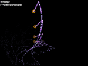

Пример 04 - Рендеринг в текстуру
В этом примере мы научимся, как использовать цели рендеринга.

Сначала мы объявим переменные чтобы работать с целью рендеринга и спрайт, который с ней ассоциирован:
hgeSprite* tar;
HTARGET target;
Когда приложение теряет фокус, идентификатор текстуры цели рендеринга может измениться. Поэтому мы
напишем функцию реагирующую на получение фокуса, которая получит новую текстуру цели рендеринга:
bool FocusGainFunc()
{
if(tar && target)
tar->SetTexture(hge->Target_GetTexture(target));
return false;
}
В FrameFunc (функция кадра) мы сначала нарисует все наше хозяйство в текстуру, указывая нашу
цель рендеринга в функции Gfx_BeginScene:
hge->Gfx_BeginScene(target);
hge->Gfx_Clear(0);
par->Render();
spr->Render(x, y);
hge->Gfx_EndScene();
Затем мы нарисуем несколько экземпляров текстуры на экране:
hge->Gfx_BeginScene();
hge->Gfx_Clear(0);
for(i=0;i<6;i++)
{
tar->SetColor(0xFFFFFF | (((5-i)*40+55)<<24));
tar->RenderEx(i*100.0f, i*50.0f, i*M_PI/8, 1.0f-i*0.1f);
}
fnt->printf(5,5,"dt:%.3f\nFPS:%d", dt, hge->Timer_GetFPS());
hge->Gfx_EndScene();
В функции WinMain мы назначим нашу функцию получения фокуса:
hge->System_SetState(HGE_FOCUSGAINFUNC, FocusGainFunc);
Затем, после инициализации HGE, мы создадим цель рендеринга и спрайт, которым мы будем
пользоваться для вывода созданной текстуры:
target=hge->Target_Create(512,512,false);
tar=new hgeSprite(
hge->Target_GetTexture(target),0,0,512,512);
tar->SetBlendMode(
BLEND_COLORMUL | BLEND_ALPHAADD | BLEND_NOZWRITE);
В конце приложения мы удалим спрайт, который мы использовали для отображения сгенинированной текстуры и самой
цели рендеринга:
delete tar;
hge->Target_Free(target);
Остальной код завершения идентичен тому, что был в предидущих примерах.
Полный исходный код с детальными комментариями для этого примера можно найти в директории tutorials\tutorial04.
Необходимые медиа файлы вы найдете в директории tutorials\precompiled.
|